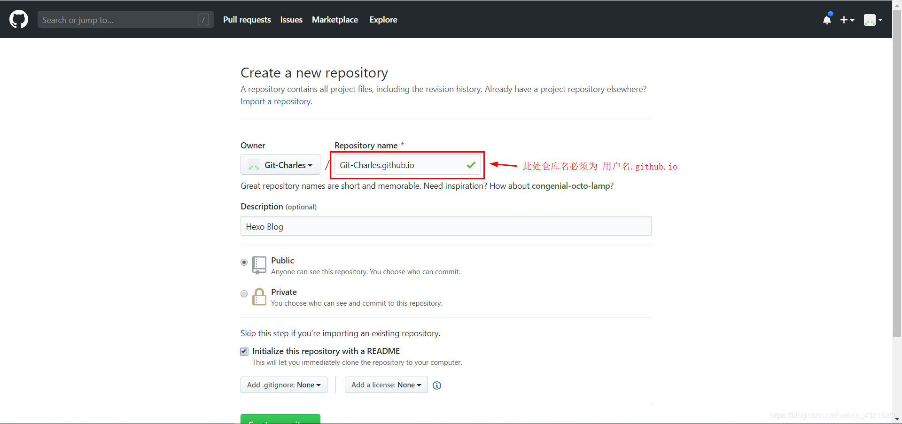

Welcome to Hexo! This is your very first post. Check documentation for more info. If you get any problems when using Hexo, you can find the answer in troubleshooting or you can ask me on GitHub.
1.前言
使用github pages服务搭建博客的好处有：
- 全是静态文件，访问速度快；
- 免费方便，不用花一分钱就可以搭建一个自由的个人博客，不需要服务器不需要后台；
- 可以随意绑定自己的域名，不仔细看的话根本看不出来你的网站是基于github的；
- 数据绝对安全，基于github的版本管理，想恢复到哪个历史版本都行；
- 博客内容可以轻松打包、转移、发布到其它平台；
- 等等
1.1 准备工作
在开始一切之前，你必须已经：
- 有一个github账号，没有的话去注册一个；
- 安装了node.js、npm，并了解相关基础知识；
- 安装了git for windows（或者其它git客户端）
2.搭建github博客
2.1. 创建仓库
新建一个名为你的用户名.github.io的仓库，比如说，如果你的github用户名是test，那么你就新建test.github.io的仓库（必须是你的用户名，其它名称无效），将来你的网站访问地址就是 http://test.github.io 了，是不是很方便？
由此可见，每一个github账户最多只能创建一个这样可以直接使用域名访问的仓库。
几个注意的地方：
- 注册的邮箱一定要验证，否则不会成功；
- 仓库名字必须是：username.github.io，其中username是你的用户名；
- 仓库创建成功不会立即生效，需要过一段时间，大概10-30分钟，或者更久，我的等了半个小时才生效；

注意：
Github 仅能使用一个同名仓库的代码托管一个静态站点。
Github 中仓库名称: 用户名.github.io
2.2. 设置git全局用户名
设置git全局用户名 方便将本地文件提交到github
1 | git config --global user.name "yourname" |
这里的yourname输入你的GitHub用户名，youremail输入你GitHub的邮箱。这样GitHub才能知道你是不是对应它的账户。例如我的：
1 | git config --global user.name "lijm3" |
可以用以下两条，检查一下你有没有输对
1 | git config --global -l |
3.使用hexo写博客
3.1. hexo简介
Hexo是一个简单、快速、强大的基于 Github Pages 的博客发布工具，支持Markdown格式，有众多优秀插件和主题。
hexo官网
github: https://github.com/hexojs/hexo
3.2. 原理
由于github pages存放的都是静态文件，博客存放的不只是文章内容，还有文章列表、分类、标签、翻页等动态内容，假如每次写完一篇文章都要手动更新博文目录和相关链接信息，相信谁都会疯掉，所以hexo所做的就是将这些md文件都放在本地，每次写完文章后调用写好的命令来批量完成相关页面的生成，然后再将有改动的页面提交到github。
3.3. 注意事项
安装之前先来说几个注意事项：
- 很多命令既可以用Windows的cmd来完成，也可以使用git bash来完成，但是部分命令会有一些问题，为避免不必要的问题，建议全部使用git bash来执行；
- hexo不同版本差别比较大，网上很多文章的配置信息都是基于2.x的，所以注意不要被误导；
- hexo有2种_config.yml文件，一个是根目录下的全局的_config.yml，一个是各个theme下的；
3.4. 安装
1 | npm install -g hexo-cli |
安装完后输入hexo -v验证是否安装成功。
至此hexo就安装完了。
接下来初始化一下hexo,即初始化我们的网站，输入hexo init初始化文件夹
1 | hexo init MyBlog |
这个MyBlog可以自己取什么名字都行，然后，接着输入npm install安装必备的组件。
1 | cd MyBlog //进入这个MyBlog文件夹 |
查看hexo插件安装情况
1 | npm ls --depth 0 |
.
├── node_modules：是依赖包
├── public #存放被解析markdown、html文件
├── scaffolds #当您新建文章时，根据 scaffold生成文件
├── source #资源文件夹
| └── _posts #博客文章目录
└── themes #主题
├── _config.yml #网站的配置信息。标题、网站名称等
├── db.json：#source解析所得到的
├── package.json # 应用程序的配置信息
这样本地的网站配置也弄好啦，输入hexo g生成静态网页，然后输入hexo s打开本地服务器，
1 | hexo g |
然后浏览器打开http://localhost:4000/，就可以看到我们的博客啦，效果如下：
按ctrl+c关闭本地服务器。
查看hexo插件安装情况
1 | npm ls --depth 0 |
4.将hexo部署到GitHub
这一步，我们就可以将hexo和GitHub关联起来，也就是将hexo生成的文章部署到GitHub上，打开博客根目录下的_config.yml文件，这是博客的配置文件，在这里你可以修改与博客配置相关的各种信息
4.1 修改_config.yml最后一行的配置
1 | deploy: |
repository修改为你自己的github项目地址即可，就是部署时，告诉工具，将生成网页通过git方式上传到你对应的链接仓库中。
4.2. 安装deploy-git
这个时候需要先安装deploy-git ，也就是部署的命令,这样你才能用命令部署到GitHub。
1 | npm install hexo-deployer-git --save |
4.3. 发布
1 | hexo clean |
其中 hexo clean清除了你之前生成的东西，也可以不加。 hexo generate顾名思义，生成静态文章，可以用 hexo g缩写 ，hexo deploy部署文章，可以用hexo d缩写
注意deploy时可能要你输入username和password
More info: Deployment